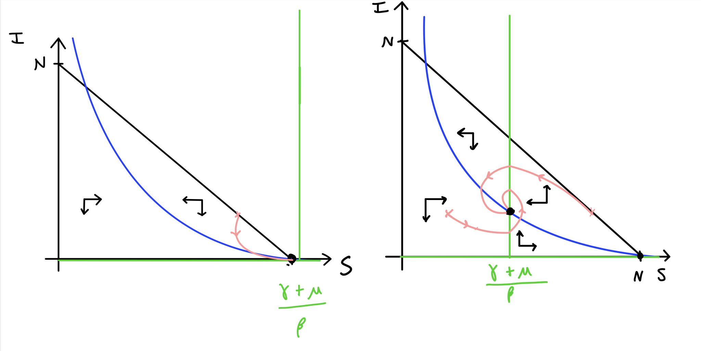

6 - The SIR model with demographics#
Updating the model#
Let us now add some increased detail in to the model by including birth and death processes. Let’s begin by drawing a schematic of the system again:
Figure: Schematic of the SIR model with births and deaths now included.
We will make the simplifying assumption that the birth rate and death rate are equal, so that the population would be at equilibrium in the absence of disease (this is a rather questionable assumption for many ecological populations, but perhaps reasonable for modern human populations). This gives the equations:
Once more, \(dN/dt=0\) so we can eliminate \(R=N-(S+I)\). One thing to note here is that the infectious period has changed to be \(1/(\gamma+\mu)\). When we define \(R_0\), therefore, in our updated model we will have \(R_0=\beta N/(\gamma+\mu)\).
Endemic disease#
At this point we could non-dimensionalise our system as we have seen previously. This would allow us to reduce the number of parameters in our model to make life easier, as well as revealing potentially useful information about the scales involved. This has been left for you to consider in the Homework Sheet. For now, though, let us continue with our analysis as before.
First we need to find the steady states of our system, where \(dS/dt=0\) and \(dI/dt=0\) simultaneously. There are two cases where \(dI/dt=0\):
\(I^*=0\), giving \(dS/dt=0\implies S^*=N\);
Population is disease-free;
\(S^*=\dfrac{\gamma+\mu}{\beta}\), giving \(dS/dt=0\implies I=\dfrac{\mu(N-S^*)}{\beta S^*}=\dfrac{\mu}{\beta}\left(\dfrac{N}{S^*}-1\right)\);
Disease is endemic.
Let’s look again at that last equilibrium,
We now have two important terms from epidemiology. An epidemic occurs when a disease initially spreads through a population. A disease is endemic when it remains at a steady level within the population.
Let’s now look at the Jacobian for our system,
We shall now deal with each of our equilibria in turn.
Disease-free equilibrium
Having a zero in an off-diagonal (for a 2x2 matrix) makes our life much easier, as we can just read off the eigenvalues as the two diagonal entries. In this case we therefore have \(\lambda_1=-\mu\) and \(\lambda_2=\beta N-(\gamma+\mu)=(\gamma+\mu)(R_0-1)\). Therefore,
if \(R_0<1\), the disease-free equilibrium is stable;
if \(R_0>1\), the disease-free equilibrium is unstable.
Endemic equilibrium
In this case we cannot read off our eigenvalues quite so easily, so we shall instead look at the signs of the trace and determinant:
tr(\(J\)) \(= -\mu R_0\)
det(\(J\)) \(=\mu(\gamma+\mu)(R_0-1)\)
The equilibrium is stable if tr(\(J\))\(<0\) and det(\(J\))\(>0\), otherwise it is unstable (or a saddle). Clearly the trace is always negative. From the determinant we see that,
if \(R_0<1\), the endemic equilibrium is unstable;
if \(R_0>1\), the endemic equilibrium is stable.
So, overall, when \(R_0<1\) the population will become disease-free, but when \(R_0>1\) the disease will become endemic.
Phase portraits#
We can explore these two scenarios, \(R_0<1\) and \(R_0>1\), with phase portraits. To find the nullclines:
Have a go
Draw the two qualitatively different phase portraits for this system.
Click for solution
The two phase portraits are sketched below. If you start sketching a phase portrait you should find that the only way you can produce two qualitatively different phase portraits is again about the placement of the vertical nullcline, which relates to whether or not \(R_0>1\) or not. In the first diagram, all trajectories will eventually approach the bottom-right corner at the disease-free equilibrium. In the second diagram, you should see the new endemic equilibrium in the middle where the two nullclines cross. Trajectories approach this equilibrium, moving around it anti-clockwise (as I once read, if you can’t remember clockwise/anti-clockwise directions, clockwise is the way you dial a phone).
Figure: Phase portraits for the SIR model with demographics.
\(R_0\) is a quantity that is often estimated for diseases when they emerge, and gives a good indication of how contagious they are and (as we shall see later) how easy they will be to eradicate. We can also use \(R_0\) as a useful bifurcation parameter to draw a bifurcation diagram of this system below. Note again the key value of \(R_0=1\) where the transcritical bifurcation occurs.
Figure: Bifurcation diagram showing the infected equilibrium as \(R_0\) is varied.
3 key points#
We can extend the SIR model to be more realistic for long-term predictions by including births and deaths.
We now get an endemic equilibrium, where the disease will remain in the population over the long term.
\(R_0\) remains a key quantity, in particular determining whether we get an endemic equilibrium or the disease dies out.